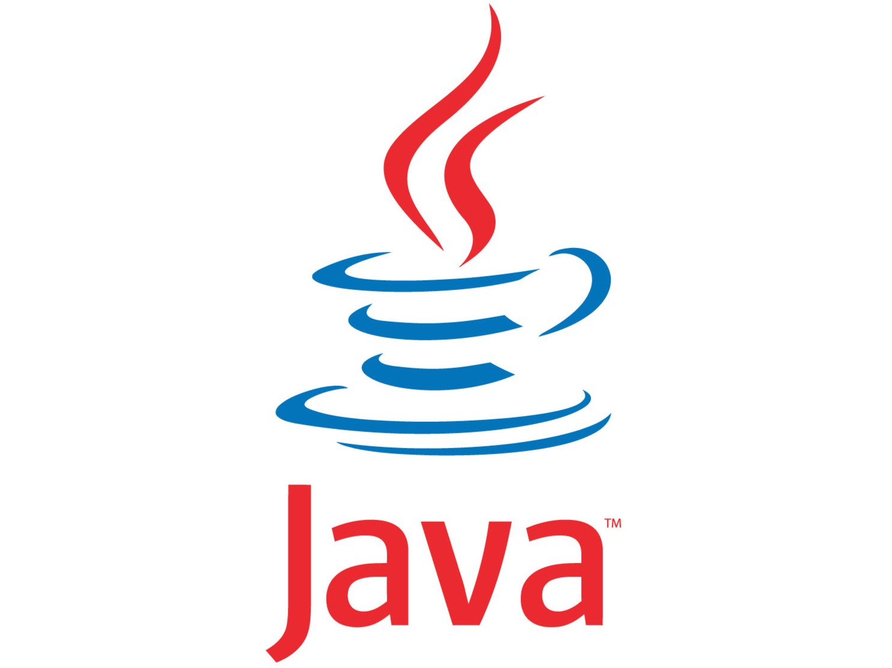

Hi, I'm Tiberius
Software Engineer
Welcome to my software engineer portfolio! Here you will find a collection of my work as a software engineer, showcasing my skills, expertise, and passion for developing high-quality software.
Latest Projects

Qwizer
Qwizer is a user-friendly PWA for creating and conducting quizzes. Participants can access quizzes on any device without installing additional software. It also works offline and generates a QR code for syncing data when the internet connection is restored.
Github repo
BacoWine
Bacowine allows users to view and organize information about wines and wine cellars oriented to future wine tasting. This intuitive application provides a user-friendly platform for wine enthusiasts to keep track of their wine collections and explore detailed information about different wines and their respective cellar locations. Users can easily access and view wine details, including names, vintages, vineyards, and regions.
Github repo
Machine Learning Algorithms
The webpage is an implementation of several algorithms commonly used in different fields. It includes the A* algorithm, ID3 algorithm, Bayes algorithm, Lloyd's algorithm, and k-means algorithm. The A* webpage is designed with a captivating videogame aesthetic inspired by a dungeon environment.
Github repo
Covid-19 analysis
COVID-19 dataset analysis using PySpark leverages a dataset sourced from Kaggle, a popular platform for data science and machine learning. This analysis focuses on exploring and deriving insights from the provided COVID-19 dataset using PySpark, a powerful Python library for distributed data processing.
Github repo
Traffic Simulator
The Traffic Simulator Java app is a software application created for simulating and analyzing traffic scenarios. It offers a platform to model and explore different aspects of traffic flow, including the ability to simulate various events such as weather changes. Additionally, the app incorporates pollution restrictions that can limit car speeds, providing a realistic representation of traffic dynamics in different environmental conditions.
Github repo
Alien Invaders
The Console Alien Invaders Java app is a simple yet exciting game that brings back the nostalgic experience of classic arcade-style alien invasion games. It is designed to be played in a console environment, providing a retro gaming experience for Java enthusiasts.
Github repo